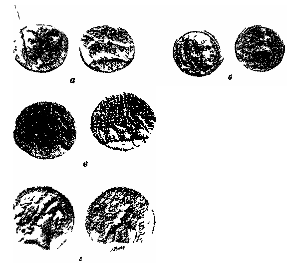
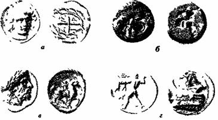
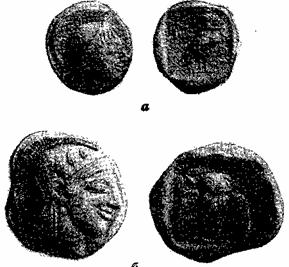
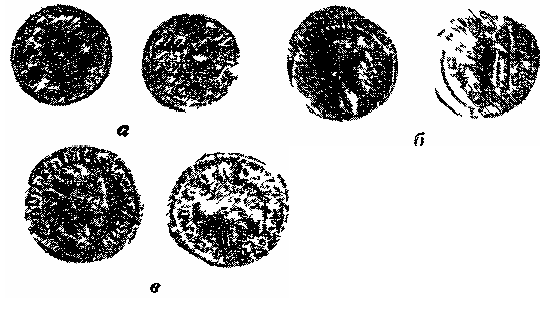
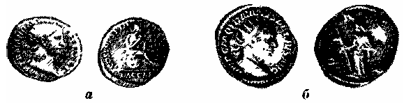
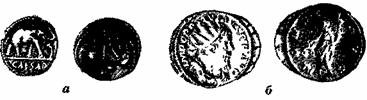
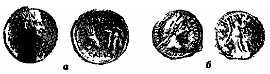
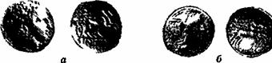

Серебро в древнем мире

Задолго до того как из серебра стала чеканиться монета, оно выполняло основные функции денег.
Но эти функции выполняли не только металлы (в слитках, лепешках, брусках, браслетах, кольцах и т.п.), а и другие материальные ценности, и чаще всего скот. В 594 г. до н. э. Солон установил стоимость серебра в сравнении с быком, приравняв штраф в одного быка пяти драхмам. По традиции бык нередко изображался на тетрадрахмах греческих городов-государств (рис. 2). Но для торговых целей и быки, и разного рода слитки были неудобны. Появилась необходимость в монете. К. Маркс пишет: «Возьмем, во-первых, монету: первоначально она не что иное, как определенная весовая часть золота: штемпель сюда добавляется как гарантия, как показатель веса, так что пока он еще ничего не меняет; штемпель, являющийся формальным уведомлением о стоимости, превращается в самостоятельный знак, символ стоимости и посредством самого механизма обращения становится вместо формы субстанцией; здесь необходимо вмешательство государства, так как подобный знак должен быть гарантирован получившей самостоятельное бытие мощью общества, государством. Но на самом деле деньги действуют в обращении именно как деньги, как золото и серебро; быть монетой — это всего лишь их функция»[5].
Рис. 2. Тетрадрахма Фаестуса.
Население территории нашей страны, начиная с до-славянских времен, пользовалось серебром, поступавшим из других стран, главным образом в виде монет-пришельцев. Много разных иноземных монет обнаружено в кладах. По северному и восточному побережью Черного моря и в Средней Азии в кладах встречены (правда, в очень малых количествах) монеты античных греческих городов — государств, чеканенные до нашей эры. На территории юго-запада РСФСР, Украины и Белоруссии обнаружено большое количество кладов с римскими монетами, относящимися к первым столетиям нашей эры. В Восточной Европе, включая Прибалтику, найдено много кладов с восточными арабскими монетами VIII — X вв., и нумизматы утверждают, что территория здесь усеяна такими кладами. Позднее в кладах снова встречаются западноевропейские монеты: на западе России — денарии (XI — XII вв.), здесь же, к западу и юго-западу от Москвы, пражские гроши (XIV — начало XVI в.) и, наконец, на Украине, в Белоруссии и Прибалтике — талеры (с начала XVI в.).
Эти основные группы монет-пришельцев, разновеликие по количеству находок, по типам монет, а также по числу месторождений, давших металл для их чеканки, будут описаны ниже в хронологическом порядке, по возможности на фоне создания и становления денежной системы Русского государства.
Ф. Энгельс в «Диалектике природы», сопоставляя античное время и начало эпохи Возрождения, писал:
«1) Вместо узкой культурной полосы вдоль побережья Средиземного моря, которая лишь кое — где протягивала свои ветви в глубь материка и по Атлантическому побережью Испании, Франции и Англии и которая поэтому легко могла быть разорвана и смята германцами и славянами с севера и арабами с юго-востока, — теперь одна сплошная культурная область — вся Западная Европа со Скандинавией, Польшей и Венгрией в качестве форпостов»[6].
Одним из показателей культуры исторического периода является наличие в стране собственной добычи серебра, ибо, как говорит К. Маркс:
«Открытие серебряных рудников зависит от технического прогресса и от общего уровня цивилизации»[7].
В трактате «О месторождениях и рудниках в старое и новое время» Г. Агрикола следующим образом показывает месторождения серебра побережья Средиземного, Эгейского и Черного морей — культурной полосы античного времени: «То, что в Испании добывалось много серебра и что там находились очень доходные рудники, мы узнали от Плиния, который писал, что рудник под названием Бебело давал Ганнибалу доход ежедневно 300 фунтов серебра… На острове Сардиния также было много серебряных рудников. Серебряные рудники Македонии располагались в области
Дамастион (в Эпире) и на Персиасзумпф. Александр, этот покоритель многих народов[8], получал из них большой доход, ежедневно 1 талант серебра. Отец Александра Филипп захватил в Фессалии серебряные рудники. Среди рудников афинян самыми древними являются рудники в горах Лаврион и в местности, называемой Торикос. Наряду с другими о них очень много писали Ксенофонт и Геродот. Во Фракии было также много серебряных рудников, а именно на горах Пангей; эти рудники были захвачены македонским царем Филиппом. Наконец, остров Сифнос был богат не только золотыми, но и серебряными месторождениями…
В Азии в окрестностях «Новой деревни» во Фригии находятся серебряные рудники; Колхида была чрезвычайно богата серебром; Алиба, как говорит Гомер, была «источником серебра». Были ли в Африке обнаружены серебряные руды? Об этом летописцы не сообщают». Большинство из этих названных Агриколой месторождений дало металл для чеканки монет в государствах античного мира.
Малая Азия и ГрецияК. Маркс говорит, что «…добывание серебра предполагает рудокопные работы и вообще сравнительно высокое развитие техники. Поэтому первоначально стоимость серебра, несмотря на его меньшую абсолютную редкость, была относительно выше, чем стоимость золота… Но по мере того как развиваются производительные силы общественного труда и вследствие этого продукт простого труда дорожает по сравнению с продук-том сложного труда, по мере того как кора земли все более раскапывается и первоначальные поверхностные источники добычи золота иссякают, стоимость серебра падает относительно стоимости золота»[9]. Большая трудоемкость работ на серебро ведет к организации более крупных производств по его добыче, постановке более строгого учета, а следовательно и к накоплению более подробных данных об открытиях и разработках месторождений серебра. К тому же месторождения серебра, эксплуатировавшиеся, начиная с античного времени, нередко продолжают и в наши дни (или до не — давнего времени) разрабатываться на полиметаллы или руды других металлов, и поэтому читатель легко может охарактеризовать их с точки зрения геологии.
Лидия. Сохранившиеся памятники наиболее ранней добычи серебра происходят из государств Малой Азии. Около 4 тыс. лет тому назад в долине р. Галис (ныне р. Кызыл-Ирмак) в Малой Азии образовалось государство хеттов. К концу XV в. до нашей эры хеттам стали подвластны почти вся Малая Азия, Сирия и Палестина. Они стали серьезной угрозой для египтян. Вступивший около 1300 г. до н. э. на египетский престол фараон Рамсес II повел решительную борьбу с хеттами. По мирному договору, подписанному около 1270 г. до н, э., хетты вернули Египту Палестину и южную часть Сирии. Текст этого договора, воспроизведенный на стене храма Карнака, гласит: «Договор, который изложил великий князь хеттов, ., на серебряной доске для Рамсеса, великого повелителя Египта…».
Хеттская серебряная доска с текстом мирного договора, выгравированным клинообразными письменами, была, возможно, самой ранней «подписанной» и «датированной» огромной плакеткой из серебра и примерно на 600 лет древнее первых монет.
О значительном распространении серебра среди народов, населявших Черноморское побережье Малой Азии, пишет в «Илиаде» Гомер: «Рать гализонов Годий к Эпистроф вели из Алибы стран отдаленных, откуда исход серебра неоскудный».
И, действительно, на территории современной Турции имеется много древних серебряных рудников, которые разрабатывали и хетты, и персы, и греки, и римляне. Памятниками добычи серебра в этих местах служат монеты.
После падения Хеттского царства на территории его области Ассува, к западу от реки Галис возникло государство Лидия.
Лидийский царь Гигес (687 — 654 гг. до н. э.) стал известен, в частности, тем, что во время его царствования появилась первая в истории чеканенная монета — статер из электрума в 14 г, на которой изображался лев — геральдический символ столицы Лидии г. Сарды (рис. 3). Так, Геродот в «Истории» пишет: «Первыми из людей они (лидийцы. — М.М,) насколько мы знаем. стали чеканить и ввели в употребление золотую и серебряную монету и впервые занялись мелочной торговлей».
Характеризуя Лидию, Геродот пишет: «Природными достопримечательностями, как другие страны, Лидия совсем не обладает, кроме, может быть, золотого песка, приносимого течением реки Тмола». Ниже это указание несколько уточняется. Рассказывая об осаде г. Сарды и возникшем пожаре, Геродот сообщает, что жители «стали сбегаться на рыночную площадь и к реке Пактолу (Пактол, несуынй с собой золотой песок, течет с Тмола через рыночную площадь и потом впадает в реку Герм, а та — в море)».
Рис. 3. Статер Гигеса.
Как отмечает В. И. Вернадский: «Приблизительно за семь столетий до нашей эры электрум был найден в довольно значительном количестве в речном песке и аллювии некоторых рек Малой Азии — Тмола, Сипила, Пактола. В Пактоле находили значительные самородки этого металла. Эти месторождения дали начало монете из электрума в Лидийском государстве». Р. В. Шмидт уточняет:
«В Лидии золото добывалось как из золотоносных жил гор Тмола и Сипила, так и из золотоносных песчаных россыпей рек Пактола и Герма», т. е. разрабатывались не только россыпи, но и коренные месторождения.
Происхождение электрума Пактола древние греки объясняли следующим образом.
Однажды бог виноделия Дионис бродил с шумной свитой по лесистым скалам Тмола. От гуляк отстал учитель Диониса Силен, забредший на поле. Там крестьяне связали его гирляндами из цветов и привели к царю Мидасу. Узнав пленника, Мидас девять дней чествовал его роскошными пирами, а затем отвел к Дионису. Обрадованный бог позволил Мидасу в награду выбрать любой дар. Мидас воскликнул:
— О, великий бог Дионис, повели, чтобы все, к чему я прикоснусь, превращалось в чистое, блестящее золото!
Желание Мидаса было исполнено. Ликуя, срывает он зеленую ветвь с дуба, и она превращается в золотую. Срывает колосья — золотыми становятся зерна. Он моет руки — вода стекает с них золотыми каплями, Но когда за столом он прикасался к пище и золотыми становились хлеб, яства и вино, Мидас понял, что погибнет от голода. Простер он руки к небу и воскликнул:
— Смилуйся, смилуйся о, Дионис! Прости! Я молю тебя о милости! Возьми назад этот дар!
Явившийся Дионис сказал Мидасу:
— Иди к истокам Пактола, там в его водах смой с тела этот дар и свою вину.
И когда Мидас пришел к истокам Пактола, погрузился в его чистые воды, — смыли они с тела
Мидаса дар, полученный от Диониса, и заструились золотом. С тех пор Пактол стал золотоносным.
Эта легенда позволяет уточнить время открытия россыпей Пактола — Мидас царствовал в середине VIII в. до н. э.
На первых лидийских монетах нет ни дат, ни надписей, что затрудняло их определение. Поэтому так важен (ее возраст бесспорен) лидийский электровый статер с именем Алиата (VI в до н. э.) правнука Гигеса и отца Креза — последнего царя Лидии.
Лидийские месторождения электрума на горах Тмоле и Сипиле и по рекам Пактолу и Герму эксплуатировались интенсивно и к началу нашей эры были полностью исчерпаны. Вероятно, они были богатыми. Персидские цари после захвата Лидии стали владеть огромным количеством золота.
Но личную собственность лидийского царя персы, видимо, не тронули. Так, Пифий, внук Креза, по словам Геродота, имел наличными «..2000 талантов серебра, золота 4000000дариевых ста-теров без 7000», т. е 67, 3 т серебра и 33, 6 т золота. Но на территории Лидийского государства позднее велась также и добыча серебра, о чем свидетельствуют древние рудники на месторождении серебросодер — жащих свинцовых руд Бальямаден в 60 км от Измира.
В древности добывались богатые окисленные руды с самородным серебром.
Из серебра месторождений Малой Азии был отчеканен еще ряд более поздних монет. Так, греческая колония Синопа (ныне г. Синоп), основанная в VIII в. до н. э, чеканила в III — I вв до н э серебряные монеты из металла месторождений, разрабытывавшихся в районе г. Мерзифон в нижнем течении р. Кызыл-Ирмак. Позднее эти месторождения стали именоваться Гюмюш-хаджикей( гюмюш — по-турецки серебро).
Из других серебро-свинцово-цинковых месторождений, дававших серебро для чеканки монет еще при Александре Македонском, известно знаменитое Гюмю-шане. Из серебра этого месторождения чеканились монеты греческого государства, ставшего затем римской колонией — Кесарией Каппадоклйской.

Рис. 4. Монеты малоазиатских государств:
а — драхма Синопы 360 г до н. э.;
б — тетрадрахма Александра Македонского, (2/3 натур. вел.);
в — дидрахма Каппадокии римского императора Адриана;
г — тетрадрахма Антиоха II.
К западу от г Эльязыга на р Евфрат бьпи древние рудники на месторождении Кебанманден, где жилы галенита, содержащего серебро, приурочены к контакту жил порфира и метаморфических пород. Из добытого здесь серебра чеканились монеты династии Селевкидов (рис. 4).
Фракия. Предполагается, что добыча серебра на Пангее была начата еще финикийцами, и с ним связано легендарное богатство Кадма. Как указывает Ксе-нофонт, коренными жителями здесь были «фракийцы, не управляющиеся царями», т. е. жившие в то время в условиях родового строя. Это облегчало захват земель и эксплуатацию месторождений Геродот сообщает, что золото Фракии помогло афинскому тирану Писистрату (541 — 527 гг до н. э.) второй раз овладеть Афинами «Он упрочит свое государево сильными отрядами наемников и денежными сборами как из самих Афин, так и из области на реке Стримоне» Об этом же пишет Аристотель: «Сначала Писистрат основал поселение около Фермейского залива, а оттуда переехал в окрестности Пангея».
Геродот, упоминая месторождения серебра и золота Фракии, пишет, что когда полководец Дария Мегабаз отправил послов к царю Македонии Аминте с требованиями «земли и воды» (т. е, подчиниться), путь их начался от озера Прасиады. «К озеру, — пишет Геродот, — непосредственно примыкает рудник, который впоследствии приносил Александру ежегодный доход талант серебра. За этим рудником возвышается гора под названием Дисорон, а за ней уже — Македония»
Когда сын Дария Ксеркс пришел во Фракию, он «миновал затем города пиерейцев, из которых один называется Фагрет, а другой Пергам. Здесь он шел мимо самих городов, оставляя вправо Пангей, большую и высокую гору с золотыми и серебряными рудниками. Обитают в этой стране пиерейцы, одоманты и, прежде всего, сатры».
Ряд походов во Фракию с целью овладеть рудниками и приисками горы Пангея и реки Стримона, по мере укрепления государства, предпринимали Афины. В 466 г. до н. э. началась война Афин с Фасосом, владевшим рудниками в Скаптегиле на Фракийском побережье.
Война с Фасосом окончилась победой афинян. Как пишет Фукидид, «фасосцы отказались от владения на материке и от приисков» В 436 г у устья р Стримона был основан город Амфиполь, который также стал чеканить свои монеты.
Одним крупным рудником во Фракии во времена Геродота владел, как сказано, царь Македонии Александр I (сын Аминты). Из серебра этого рудника отчеканена монета города Неаполя Македонского В IV в до н. э. рудники Пангея были захвачены Филиппом Македонским. Позднее при Филиппе были открыты богатые месторождения в районе Крэниды (переименованной в Филиппы) к востоку от горы Пангей, которые приносили более 1 тыс. талантов в год. В связи с этим широкое распространение поцучили серебряные тетрадрахмы Филиппа, а затем его сына Александра.

Рис. 5. Монеты из серебра рудников Фракии:
а — тетрадрахма г Амфиполя, (4/5 натур, вел.);
б — дидрахма г Неаполя Македонского;
в — тетрадрахма даря Филиппа Македонского (4/5 натур. вел.);
г — тетрадрахма царя Дмитрия II Полиоркета Македонского (4/5 натур вел).
Особое историческое значение имеет одна из тетрадрахм царя Македонии Дмитрия II Полиоркета (306 — 283 гг. до н. э.). По этой монете с изображением проры (кормы корабля), отчеканенной в честь победы Дмитрия в морском сражении с флотом острова-государства Родоса в 305 г до н. э, была установлена и история находящейся в Лувре мраморной проры со стоящей на ней богиней Никой (рис. 5).
Как известно, в Родопах на территории Болгарии свинцово-цинково-серебряные месторождения относятся к гидротермальным. Можно предположить, что аналогичными по генезису являются и коренные месторождения южной Фракии в районе Пангея — Стримона.
Фасос. Остров-государство Фасос разрабатывал не только фракийские месторождения, но и месторождения, которые имелись на самом острове, и чеканил свою монету (рис. 6).
Геродот так характеризует рудники Фасос: «Золотые рудники в Скаптегиле приносили им обычно 80 талантов; рудники же на самом Фасосе — несколько меньше, но все же столь много, что фасосцы были не только свободны от налогов на хлеб, но все, вместе взятое, — доходы от владений на материке и от рудников — составляло ежегодно сумму в 200 талантов, а в лучшие годы — даже 300 талантов».
Рис. 6. Драхма Фасоса.
Сифнос. У античных авторов имеются упоминания о серебряных рудниках острова-государства Сифноса. Геродот пишет: «Сифнос тогда процветал и был самым богатым из всех островов. На острове были золотые и серебряные рудники, такие богатые, что на десятину доходов с них сифнийцы воздвигли в Дельфах одну из самых пышных сокровищниц. Ежегодно граждане острова делили доходы между собою». Интересно также свидетельство Павсания, приводимое Р. В. Шмидт:
«На острове Сифносе были золотые разработки, и бог велел десятую часть дохода отвозить в Дельфы; поэтому сифнийцы выстроили сокровищницу и стали возить туда десятину. Но когда они из жадности перестали давать дань, то последовало наводнение и уничтожило их разработки». Она же сообщает, что в результате обследования острова, проведенного англичанином Бентом, на берегу моря были обнаружены следы древних выработок и довольно протяженная штольня, В стенках были видны вырубленные ниши для ламп рудокопов, обнаружены орудия труда, снаружи близ галереи найдены плавильные печи и около них шлак. Бент обследовал дно моря и тоже нашел следы шлака. Все это подтверждает возможную катастрофу, в результате которой большая часть рудников была затоплена».
Наиболее успешно добыча серебра на Сифносе велась в VI в. до н. э., свидетельством чего является чеканка монет — дидрахм (рис. 7).
Эллада. Из серебряных монет первыми в истории были монеты греческого острова-государства Эгины. Они лишь на несколько десятилетий моложе лидийских электровых монет. Внешний вид эгинскнх монет н другой металл дают основание предполагать, что в Згине монета возникла самостоятельно.
Рис. 7. Дидрахма Сифноса.
Эгинские монеты — это равновесные бобообразные слиточки серебра. При чеканке они помещались на наковальню с глубоко вырезанным на ней изображением черепахи. В результате удара по слиточку верхним «штемпелем», имевшим шипы, металл вгонялся в углубление на наковальне. Подобная технология чеканки монет, но уже парой штемпелей, переходила в другие страны и просуществовала почти два с половиной тысячелетия. Эгинский статер (рис. 8) весил около 12 г. На Эгине месторождений серебра не было, поэтому сырьем для изготовления монет было серебро, главным образом из месторождений Лаврион (или Лаврий).
Первое упоминание о Лаврионском месторождении имеется у Геродота, когда он рассказывает о начавшейся по совету Фемистокла подготовке греков к морскому сражению с персами при Саламине (480 г. до н. э.). «Еще раньше этого совета Фемистокла, — пишет Геродот, — афиняне приняли другое его удачное предложение. В государственной казне афинян тогда было много денег, поступивших от доходов с Лаврийских рудников. Эти деньги полагалось разделить между гражданами, так что каждому приходилось по 10 драхм. Фемистокл убедил афинян отказаться от де — лежа и на эти деньги построить 200 боевых кораблей, именно для войны с Эгиной. Эта-то вспыхнувшая тогда война с Эгиной и спасла Элладу, заставив Афины превратиться в морскую державу».
Несмотря на то что античный период оставил огромное количество литературных памятников, невозможно точно установить момент открытия и начало эксплуатации крупнейших и известнейших в древности рудников Лавриона. На основании археологических источников указывают, что эксплуатация рудников началась, по-видимому, в микенский период, так как здесь найдены следы микенских поселений. Это до некоторой степени совпадает с данными Г. Агриколы: «Четвертый король Аттики (Ерихфоний — М, М.) приказал, чтобы рабы добывали серебряную руду из горы Лаврион. Он начал править за 307 лет до захвата Трои Неоптоле-мом», имевшего место в 1184 г. до н. э. Таким образом получается, что эксплуатация Лавриона началась около 1500 г. до н. э.
Рис. 8. Дидрахма (статер) Эгины.
Ксенофонт писал об этих рудниках: «Что рудники очень давно разрабатываются, всем известно, и никто не пытается даже определить, с какого времени приступили к этому».
На Лаврионе было пройдено огромное число горных выработок (только шахт насчитывается около 2000,некоторые глубиной до 120 м, а общая длина штолен и штреков составляет 120 — 150 км), позволивших детально проследить историю разработки этого месторождения.
Район Лавриона сложен чередующимися пластами известняка и сланца; серебросодержащий сульфид свинца — галенит залегает только в контактах этих пластов, два из которых выходят на поверхность. В бронзовом веке открытым способом отрабатывалась залежь по верхнему контакту пластов. Более сложной была проходка штолен по среднему контакту с целью поисков обогащенных участков и их отработки. Этот способ также был чисто эмпирическим: горняк проходил выработки по руде и за рудой.
По-видимому, в VI в. до н. э. в Лаврионе были открыты — новые участки месторождений и были увеличены с них доходы. При Солоне была проведена (в 594 г. до н. э.) важная денежная реформа — переход от эгин-ской денежно-весовой системы к эвбейской. В это время Афины стали чеканить свою монету из серебра Лавриона. Писистрат также осуществил некоторые денежные преобразования и, в частности, чеканку серебряных тетрадрахм, так называемых лаврийских сов. Позднее имел место также и выпуск подобных декадрахм (рис. 9).

Рис. 9. Лаврийские «совы»:
а — тетрадрахма;
б — декадрахма.
Чеканку декадрахм некоторые исследователи объясняют «удобством» выплаты 10 драхм, полагавшихся в то время ежегодно каждому гражданину Афин из добычи серебра на Лаврионе. Афинские тетрадрахмы вскоре завоевали всеобщее признание на международном рынке. Это было связано с открытием нижней залежи, обнаруженной специальными поисково-разведочными шахтами. Известны шахты, которые не достигли руды, так как, войдя в «случайную» линзу известняка, были остановлены.
После ее открытия началась систематическая отработка месторождения. На определенной площади на четырех углах закладывались четыре шахты. После пересечения ими рудоносного контакта выяснялось его положение в недрах и закладывались штреки. Но поскольку контакт нигде не проходил строго горизонтально, штреки также проходились с подъемами и уклонами, чему способствовало отсутствие в выработках грунтовых вод. При отработке по контакту продвигался опережающий разведочный штрек для скорейшего выявления наиболее богатых гнезд и участков. Переход к этому методу, основанному на изучении и знании геологического строения месторождения, относят к началу V в до н. э. Об этом же времени имеется письменное свидетельство Аристотеля о Лаврионских рудниках — «При архонте Никодиме (433 — 432 гг, до н. э. — М, М.), когда открыты были рудники в Маронии и город выручил сто талантов от разработки их, Фемистокл воспрепятствовал принятию совета некоторых граждан поделить серебро между народом».
В дальнейшем разработки на Лаврионе велись в тех же районах, но по мере отработки известных рудных тел велись поисково-разведочные работы, при этом, как указывает Ксенофонт: «нашедший хорошую разработку становится богатым, а не нашедший теряет все, что он истратил, ввиду такой опасности немногие теперь охотно идут на это».
По поводу организации поисково-разведочных работ Ксенофонт дает следующий совет: «Есть десять афинских фил. Если бы государство предоставило каждой из них по равному числу рабов и они приступили бы к разработке новых жил на общий риск и страх, причем одна какая-либо из них натолкнулась бы на жилу, богатую серебром, то польза от этого при всех обстоятельствах была бы им всем».
При положительных результатах разведки и нахождении богатых залежей руды применялся способ выемки руды уступами, что давало возможность применять большее количество рабочей силы и таким путем ускорить работу, оставляя большие полости, которые могли содержать до 100000 м3 руды При отработке сохранялись целики Крепление производилось в виде каменной кладки Проходились вентиляционные шахты.
Узость штолен и штреков (где жилы были бедны, 60X60 см), а также извилистость их совершенно исключали возможность пользоваться тачками для перевозки руды Подъем породы из шахт осуществлялся вручную по ступенькам в ее стенках Плиний писал:«Горняки выносят куски днем и ночью, передавая их в темноте друг другу: дневной свет видят лишь стоящие у входа». Почвенная вода удалялась из шахт и штолен ручным способом при помощи ведер. При работе пользовались же — лезными молотами, клиньями, кайлами, заступами и лопатами, кожаными мешками, корзинами.
Руду на поверхности дробили вручную железными пестами в каменных ступах до размера горошин, затем она размалывалась на мельницах. Мука промывалась в особых промывальных сооружениях. Следующей операцией после промывки руды был предварительный обжиг и плавка в печах с целью извлечения из руды серебра. Готовый металл шел на производство монет и других изделий.
Во второй половине IV в. до н. э в связи с усилением Македонии значение Лаврионских рудников падает, так как Македония захватила более богатые источники драгоценных металлов — фракийские рудники. Когда Афины были завоеваны Александром Македонским, они потеряли право чеканить монету.
Лаврионские рудники продолжали разрабатываться и римлянами. Но в римское время их значение падает, так как появляется новый конкурент, богатейшие месторождения в Испании, захваченные римлянами у Карфагена. К тому же в результате систематической и хищнической выработки наиболее богатых пород к I в. н. э Лаврионские рудники уже были в значительной степени выработаны. Страбон указывал, что в его время в Лаврионе приступили к повторной плавке старых шлаков, что свидетельствует об исчерпании источников добычи и об усовершенствовании техники извлечения. Ко времени Павсания (II в. н. э.) рудники уже окончательно бездействовали.
На ранних этапах развития производства в античное время горное дело» металлургия и металлообработка находились главным образом в руках мелких свободных ремесленников, владеющих средствами производства. Количество аттических горняков-ремесленников было настолько велико, что они составляли отдельную касту наряду с купцами и земледельцами. Об этом пишет Плутарх: «У государства был материал, были и ремесленники, способные выделять его и обработать, были рабочие, занимающиеся прокладкой дорог, и рудокопы; каждое ремесло, как полководец свою собственную армию, имело своих чернорабочих и подмастерьев в артелях, которые служили орудием и живой силой служебного назначения». Однако основной рабочей силой на рудниках были рабы.
Рис. 10. Драхма из серебра Корнуэльса.
Кельтская Британия. Перечень стран, обладающих месторождениями серебряных руд в античное время, Г. Агрикола начал с Британии: «В Европе, как сообщает Страбон, особенно богата серебром была Британия». Однако каких-либо уточняющих данных он не привел. Вероятно, добыча серебра в Британии началась одновременно с добычей олова и производилась в Корнуэльсе. Кельты, населявшие Британию в древности, чеканили серебряные драхмы, по внешнему виду (бородатая голова — конь) напоминающие монеты Македонии (рис. 10).
Месторождения серебросодержащих руд в Коркуэль-се имеют свои особенности. Руды связаны с выступающими на поверхность гранитами, вокруг которых зонально распределены рудные жилы. В оруденении имеет место не только горизонтальная, но и вертикальная зональность. По оси интрузии — оловянная зона, затем медная, свинцово-цинково-серебряная и железорудная. По вертикали — до глубины 125 м руды представлены карбонатами железа и марганца; в интервале 125 — 550 м свинцово-цинковые серебристые руды; в интервале 550 — 750 м — медные с примесью вольфрамита, ниже — касситерит с вольфрамитом вверху. Свинцово-серебря-ные руды сформированы несколько позднее жил и залежей оловянных и медных руд, но несколько раньше руд железа и марганца. Рудные тела со свинцом и серебром не так многочисленны, как олово-медные.
В. А. Обручев сообщает, что в середине прошлого века в Корнуэльсе разрабатывалось 180 месторождений, дававших ежегодно до 20 тыс. т меди и 7 тыс. т/ олова.
РимНачало чеканки первых римских серебряных денариев Плиний относит к 485 г. от основания Рима, т. е. к 269 г. до н. э. Содержание серебра в денарии, который вначале заключал в себе одну сороковую часть фунта, вскоре стало снижаться. К. Маркс приводит следующее соотношение денария с современным ему франком: «Серебряный денарий в 485 г. от основания Рима = 1 франку 63 сантимам; в 510 г. = 87 сантимам; в 513 — 707 гг.=» 78 сантимам»[10].
Древнейшие серебряные монеты римлян имеют на лицевой стороне портрет двуликого Януса, а на обороте — изображение Юпитера в квадриге (рис. И, а). Во II в. до н э на монетах появляется портрет Ромы, а на обороте Диоскуры. В императорскую эпоху изображаются портреты глав государства. Впервые это право было официально дано в виде особой привилегии Юлию Цезарю незадолго до его кончины в 44 г. до н. э. (рис. 11, 6). От императора же Квинтилла, убитого на 17-й день царствования, сохранилось 65 образцов монет, очень разнообразных по оформлению оборотной стороны.
Нероном (54 — 68 гг.) была установлена масса денария в 3, 41 г. Затем в течение длительного времени в металле монет снижалась проба, в связи с чем император Каракалла стал чеканить наряду с низкопробными денариями также и антонинианы из чистого серебра (рис. 11, в); масса их была 4, 7 — 5, 9 г. Вначале они были оценены в 2 денария, а в царствование Аврелиана за антониниан отдавали уже по 20 денариев, представляющих собой медную монету.
Датируются денарии легко по портретам и именам императоров или других лиц На единственной монете Адриана есть надпись с датой, «в 874 г. по основании города установлены зрелища». Эта монета отчеканена в 120 г. н. э. по случаю установления в цирке игр в па» мять основания Рима.
Римские денарии были первыми серебряными монетами, с которыми встретились славяне, населявшие Восточную Европу.

Рис. 11. Римские денарии
а — с двуликим Янусом;
б — с Юлием Цезарем;
в — римский антониниан.
Испания. Наибольшее количество серебра для чеканки римских монет давали начиная со II в. до н. э. месторождения Испании. Однако разработка рудников здесь велась намного раньше, когда еще Рима не существовало Античные авторы упоминают, что на юге Испании существовало царство Тартесс, одним из правителей которого был Аргенторий («серебряный человек-»). В настоящее время считается, что это царство существовало с XI в. до н. э. В 700 — 500 гг. до н. э. царство переживало период своего расцвета, складывалась культура населявших его иберов Около 500 г. столичный город Тартесс был завоеван карфагенянами и, видимо, разрушен. Некоторые ученые локализуют Тартесс в долине Бэтиса — современной р Гвадалквивир. В Тартессе была развита добыча металлов и особенно серебра, Страбон позднее писал, что в Бетике «есть даже гора, которую называют Серебряной благодаря находящимся на ней серебряным рудам», и указывал, что с нее стекает Бетис.
Картахена. Чеканка первых монет на территории ч Испании началась карфагенянами, которые оккупировали южную ее часть в 237 г. до н э, когда Гамилькар Барка высадился на юге полуострова Его зять Газдрубал основал Новый Карфаген — ныне Картахена, открыл близ города серебряные рудники. Их разработка особенно активно продолжалась Ганнибалом на рудниках в то время работало 20 тыс. рабов. В Иберии топа чеканились денарии, которые по массе и пробе были подражанием римским, а по изображениям напоминали тетрадрахмы Филиппа Македонского (рис. 12).
Рис. 12. Денарий из серебра Испании (Карфагенский период)
Карфагеняне добывали серебро в Картахене в больших количествах. Месторождение расположено на юго-восточном берегу полуострова в области распространения третичных вулканических пород. Жилы залегают в эффузивах или на контактах с осадочными породами и метаморфическими сланцами. У поверхности они многочисленны, а на глубине 400 — 500 м остаются только главные жилы. Руды — галенит с серебром, сфалерит, пирит, немного халькопирита. Кроме жил на Картахене имеются мощные (до 100 м) залежи — «манто», чаще на контактах эффузивов и известняков. Именно на выходах этих «манто», состоявших из свинцовых карбонатов и бурого железняка, богатых серебром, карфагенянами разрабатывалось месторождение.
Плиний, на основании данных главным образом по испанским месторождениям, дает следующую характеристику серебру: «Серебро находится только в рудниках; оно не родится так, чтобы само по себе подавало надежду, и не имеет подобно золоту блестящих искр. Руды его суть либо красноватого, либо пепельного цвета… Серебро находится во всех почти областях, но в Испании наилучшее, в бесплодной почве и в горах. И где одна токмо найдена бывает жила, там неподалеку находится и другая А сие бывает почти со всеми таковыми веществами, почему, кажется, и получили оныя от греков названия металлов (существа одно за другим находимые; существа совместно находимые).
Удивительно, что в Испании рудники, начатые АН — ; нибалом, существуют и поныне и имеют название тех, кто их открыл. Один их оных, приносивший Аннибалу ежедневно по триста фунтов доходу, называется поны — не Бабело Гора подкопана уже на тысячу пятьсот шагов, по коему пространству росположены водочерпате-ли, денно и нощно вычерпывающие воду, при светильниках, коими измеряется время».
В III в. до н. э. между Карфагеном и Римом разгорелось жестокое соперничество за преобладание в Западном Присредиземноморье. В 264 — 241 гг. до н. э Карфаген вел первую Пуническую войну с Римом, в результате которой потерял Сицилию. Во второй Пунической войне 218 — 201 гг. он потерял свои владения в Испании, а в третьей Пунической войне 149 — 146 гг. был полностью разгромлен, город Карфаген, основанный в 825 г. до н э. как финикийская колония, был разрушен, жители проданы в рабство. Основные причины падения Карфагена можно видеть в словах К. Маркса:
«…для финикиян, карфагенян и т. д. производство было делом побочным… Они поэтому и гибнут вся — кий раз, как только вступают в серьезный конфликт с античными обществами»[11].
Рио-Тинто. После победы над Карфагеном римляне овладели в Испании лишь небольшой полосой в южной и восточной прибрежных ее частях, но там и находились серебряные рудники. Лишь в начале нашей эры римляне завладели всей Испанией.
В 79 — 71 гг. до н э. на территории Испании происходило восстание под руководством Сертория, выдающегося вождя римской демократии. Это был заключительный, но длительный отголосок гражданской войны в Риме между сторонниками Мария — радикальными демократами и Суллы — крайними реакционерами, положившими начало военно-рабовладельческой диктатуры.
Против Сертория, которого поддерживало местное кельтиберское население, римское правительство направило полководцев Метелла, высадившегося в 79 г. на юге Лузитании (ныне Португалия), и Помпея, начавшего военные действия на востоке Испании. Как сообщается в «Истории Древнего мира», «бессилие и беспомощность римского правительства были таковы, что вся война в Испании велась на частные средства и „частными армиями“ Метелла и Помпея». Метелл и Помпеи не раз терпели жестокие поражения, и только благодаря заговору в штабе Сертория и убийству этого вождя удалось римским войскам ликвидировать восстание.
Рис. 13. Денарий из серебра Рио Тинто
В связи с изложенным приобретает особый интерес «римский» денарий, показанный на рис. 13. На его лицевой стороне изображены Пий — бог благочестия и аист, а на оборотной — слон, под которым буквы Q С М Р I — Квинт Цецилий Метелл Пий Император. Метелл назван здесь императором, но в республиканский период этот титул давался полководцам, а позднее римские императоры в обычном понимании этого слова именовались августами. Отец Метелла воевал в Африке и получил почетное прозвище «Нумидийский», поэтому на монете и изображен слон, которого резчик штемпеля, видимо, плохо себе представлял. Но этот денарий был крупинкой «частных» средств Метелла, на которые он вел войну. Некоторые денежные средства доставались ему как военная добыча, и в этом случае монета поступала в обращение без перечеканки. Серебро же для денариев, на которых стояли его инициалы, Метелл получил другим путем.
На юге Лузитании Метелл высадился неспроста. Его ближайшей конкретной целью был захват рудников Рио-Тинто на юго-западе Испании. В «Историческом очерке развития горного промысла» отмечается, что «знаменитые медные рудники Рио-Тинто, в Анда-лузии, достались римлянам от побежденных карфагенян в самом цветущем состоянии».
В. А. Обручев считает, что добыча в Рио-Тинто была начата «уже во времена финикиян в XI в. до н. э » и оно является древнейшим из разрабатываемых в наше время месторождений колчеданов. Рудные тела имеют форму крутопадающих линз диаметром до 1700 м при мощности 250 м; железная шляпа достигает глубины 100 м. В богатой зоне цементации содержится меди 10 — 15%, золота 15 — 30 г/т, а серебра 1, 25 кг/т. Из серебра Рио-Тинто и был отчеканен более 2050 лет назад на далеком провинциальном монетном дворе денарий Метелла (см. рис. 13).
Не исключено, однако, что Метелл вел разработку и соседних месторождений серебросодержащих руд Так, в 90 км к западу от месторождения Рио-Тинто на территории нынешней Португалии находится аналогичное месторождение Сан-Доминго. Известно, что его верхние горизонты разрабатывались начиная с римского времени, но неясно, с какого столетия. Возможно, серебро Метеллу давали и другие аналогичные месторождения, относимые в настоящее время В. И. Смирновым к классу вулканогенных. Цепь их, протягивающаяся из Португалии в Испанию, включая крупнейшее в мире скопление колчеданов в Рио-Тинто, называется «Иберийским пиритным поясом».
В его пределах известно более 300 колчеданных месторождений. Рио-Тинто представляет собой антиклиналь длиной 7 км и шириной около 1 км. Руды здесь двух типов: массивные и штокверковые. Массивные руды имеют форму залежи в крыле антиклинали, замковая часть которой срезана эрозией; штокверковые руды залегают в ядре антиклинали участками сечением в сотни метров и прослеживаются до глубины 300 м. Штокверковые руды сейчас добываются большим карьером, местами разрабатываются и железные шляпы, содержащие до 25 г/т золота и 45 г/т серебра.
Как уже говорилось, месторождения «Иберийского пиритного пояса» разрабатывались, вероятно, рудокопами Тартесса. Первые финикийские колонизаторы выведали у иберов места нахождения их рудников в «пи-ритном поясе» и, хорошо зная металлургию и обработку металлов, способствовали расширению эксплуатации месторождений, вывозя серебро как предмет меновой торговли даже в виде корабельных якорей. Однако сами финикийцы — купцы и пираты — своими не — многочисленными силами разрабатывать месторождения серебра в далекой Испании были не в состоянии. Г. Агрикола относительно событий 389 г. до н. э., т. е. через 111 лет после падения Тартесса, пишет: «Вскоре после этого финикийцы открыли месторождения в Испании, а карфагенцы начали их разработку». Это, бесспорно, относится к месторождениям «Иберийского пи-ритного пояса», так как Картахена и другие месторождения были открыты позднее и без участия финикиян.
Интересно, что богатство территории южной части Испании полезными ископаемыми в литературе впервые отметил Страбон. Характеризуя провинцию Бетика, он писал: «Нигде на земле нет ни золота, ни серебра, ни меди, ни железа в таком большом количестве, как здесь».
Сардиния. В 238 г. до н. э. Рим отобрал у Карфагена также и Сардинию. Со времен римского владычества известно находящееся на юго-западе этого острова в районе Иглезиенте месторождение Монтевеккио. За время разработки оно дало не менее 1 млн. т сере-бросодержащей руды.
Район этого месторождения сложен преимущественно осадочными породами, прорванными интрузиями гранитов, порфиритовыми и лампрофировыми жилами. Месторождение располагается в зоне разломов, рассекающих мощную песчано-глинистую толщу. Протяженность зоны около 6 км с северо-востока на юго-запад; жилы падают под углом 60 — 70°. Наибольшее рудное тело прослеживается более чем на 1 км при глубине разработки до 550 м, мощность его 5 — 10 м. Главными рудными минералами являются галенит, цинковая обманка, аргентит, мармарит, пирит, халькопирит.
В Сардинии монетного двора не было. Однако показанный на рис. 14 денарий, отчеканенный в 82 г. до н. э. на одном из итальянских монетных дворов с именем Квинта Антония Бальбуса (Q. ANTO. ВАВ), изготовлен, несомненно, из серебра Сардинии, так как в этом году Антоний Бальбус был претором Сардинии, а на эту административную должность назначались лишь на один год.
Дакия (Трансильвания). В. И. Вернадский, отмечая, что электрум «отчасти одно время в Африке и Малой Азии являлся даже важным источником серебра, которое из него выплавляли», утверждает: «несомненно, электрум мог добываться еще в Трансильвании».
Рис. 14. Денарий из серебра Сардинии.
В Трансильвании В. И. Вернадский выделяет в качестве особо важного месторождение Вереспаток (теперь Рошия Монтана, близ г. Абруда в Румынии), руды которого, кроме золота, содержат серебро и электрум. Добыча золота здесь «идет в течение тысячелетий: оно разрабатывалось еще до прихода римлян… Золото этих месторождений богато серебром». Характеризуя Тран-сильванию как центр горного промысла в римскую эпоху, В. И. Вернадский замечает: «Римляне владели Дакией с 105 по 265 г. н. э. … По-видимому в Трансильва-нию (Дакию) были римлянами переселены рудокопы из Далмации, так как местное население в значительной мере погибло в войне с римлянами».
О том, что в Трансильвании разработка золото-серебряных месторождений усилилась при римлянах, имеются упоминания в ряде источников: «При императоре Траяне римляне имели в Залатне в Трансильвании управление горными промыслами»; «Траян дозволил составить товарищество для разработки золотых рудников Дакии и Зибенбюргена». Откуда появились эти до — казательства? «Принадлежность ряда разрабатывавшихся месторождений к римским подтверждается находками в них восковых дощечек, римских монет, орудий и даже рудничных глиняных ламп с латинскими надписями; между прочим, одна из таких ламп, найденная в рудниках близ Верошпатока, была украшена изображением совы».
С именем же римского императора Траяна усиление разработки трансильванских рудников связывают также и монеты. Войска Траяна захватили Дакию в результате войны 105 — 106 гг., и в честь этого был отчеканен денарий (рис. 15, а), на лицевой стороне которого помещены портрет и титул Траяна, а на оборотной — «пленная плачущая Дакия, сидящая на доспехах, отданных Риму. Внизу надпись с сокращениями: DAC. САРТА — «Дакия капитулировала». Имя Траяна встречается в сказаниях древних славян, являясь свидетельством о времени их первых связей с римлянами.

Рис. 15. Монеты из серебра Дакии:
а — денарий Траяна;
б — антониниан Траяна Деция.
Однако нельзя согласиться с замечанием В. И. Вернадского о том, что местное население в значительной степени погибло в войне с римлянами. Монеты показывают, что даки и их союзники поднимали восстания и не раз изгоняли римлян, в связи с чем римлянам пришлось завоевывать Дакию неоднократно. Последнее завоевание, отраженное на другой монете (рис. 15, б), имело место при императоре Траяне Деции. На лицевой стороне антониниана — монеты из низкопробного се — ребра, сменившей денарий, находится портрет императора, на оборотной — женская фигура и вокруг нее надпись DACTA. Характерно, что здесь Дакия изображена не плачущей, а гордо стоящей. Этим признавалось, что Дакия не покорена, а лишь оккупирована. А при императоре Аврелиане, по уточненным данным, не в 265, а в 271 г., римляне оставили Дакию окончательно.
Во время этого «аврелианского отступления» из Дакии ушли войска, администрация и богатая прослойка оккупантов, а появившееся в результате романизации дако-римское население, которое позднее стало называться романами, или румынами, осталось на месте.
Другие римские колонии. Колониальные захваты Рима были в значительной части связаны с бассейном Рейна. «Горный журнал» в 1886 г. писал: «На левом берегу Рейна… встречаются римские горные работы близ Жироманьи и Маркирха в Вогезах»; «С чрезвы чайными пожертвованиями в издержках они разрабатывали рудные вместилища по косому направлению врывались в них… В Верхнем Эльзасе находятся римские шахты в 200 сажен и более»; «В Прирей-нской области римляне имели свинцовые и серебряные рудники в Шварцвальде». Эти территории входили в римскую провинцию Галлию, захваченную в основном при Юлии Цезаре. На рис. 16, а — денарий правления Цезаря, чеканенный в Галлии.

Рис. 16. Денарии:
а — из серебра Галлии;
б — из прирейнского серебра.
В среднем и нижнем течении Рейна находилась провинция Германия. Г. Агрикола писал: «В стране Хаттен были также серебряные рудники, о которых тот же Тацит во II книге анналов пишет:
«Несколько позднее Курций Руф получает ту же честь: на Маттиаке он заложил штольни, чтобы искать серебряную руду, но добыча была очень скудной. Кроме того, для легионеров эта работа — рыть канавы и копать грунт под землей — была неподходящей». Несколько точнее об этом же сообщается в «Горном журнале»: «По сказаниям Тацита, солдаты Курция Руфуса добывали серебряные и свинцовые руды близ Маттиума, в стране Хаттов и в Фирнберге, близ Рейнбрейтбаха…
Сверх того свинцовые и серебряные рудники имели римляне в долине Ла-ана, близ Хольцаппеля и Эмса, равно как в долине Зи-га и Аггера, например, в Уккерате и Блиссенбахе, близ Энгельскирхена, где в одном старом руднике были найдены римские инструменты, весы, гири и прочее».
Таким образом, Курций Руф примерно в 47 г. н. э. вел поисково-разведочные работы в стране германского племени хаттов, занимавших правобережье Рейна, в Сланцевых горах, к юго-востоку от нынешнего Кельна, где в римское время был монетный двор. На рис. 16, б показан денарий, отчеканенный в Кельне Постумом в 259 — 268 гг.

Рис. 17. Денарии с надписями:
а — «Армения капитулировала»;
б — «Победа над Парфией».
На востоке римские войска захватили части территории Армении и Парфии, имевшие свои рудники серебра, в связи с чем были отчеканены денарии с надписью «Армения капитулировала» (рис. 17, а) и «Победа над Парфией» (рис. 17, б).
Серебро у германцев и славянНеобходимо выяснить отношение к серебру германцев и славян, которые, как отмечал Ф. Энгельс, сыграли важную роль в падении Римской империи.
Тацит писал о германцах его времени: «В серебре и золоте боги им отказали — не знаю, по расположению ли к ним, или гневаясь на них. Впрочем, я не стану утверждать, что совсем нет серебряных или золотых жил в Германии, ибо кто ее почву исследовал? Ближайшие к нам, по причине торговых сношений, ценят золото и серебро и различают некоторые из наших монет, но у живущих внутри страны в употреблении более простой и старинный способ торговли — обмен товарами. Монету они предпочитают старинную и давно известную, с изображением колесницы с парой лошадей. При этом серебро они любят больше золота, не по душевному к нему расположению, а потому, что большее количество серебряных денег удобнее для употребления людям, покупающим предметы обыкновенные и дешевые». Это — очень интересные слова, ибо, с одной стороны, они относятся к району, который через 10 — 12 столетий стал крупнейшим поставщиком серебра, а с другой стороны, показывает роль монет в жизни германцев (рис. 18).

Рис. 18. Статер Филиппа Македонского (а), денарий Римской республики (б)
У славян роль денег — монет была несколько иной. И. Г. Спасский отмечает, что широкое и достаточно длительное знакомство древнейших славян Средней и Восточной Европы с римскими монетами позволяет предполагать зарождение у них уже тогда определенных элементарных представлений о счете, массе монеты, качестве металла. Обилие на территории нашей страны находок монетных кладов-сокровищ, преимущественно не очень крупных, говорит о том, что римские монеты в какой-то, хотя бы и очень ограниченной мере, у славян уже являлись деньгами.
К VI — IX вв., когда сложились славянские народы Европы, поступление монет из распавшейся в 476 г. Римской империи прекратилось, однако их обращение среди славянского населения продолжалось. С конца VIII в. в Киевскую Русь начался интенсивный приток по великому Волжскому пути восточной монеты — серебряных куфических дирхемов Арабского Халифата.